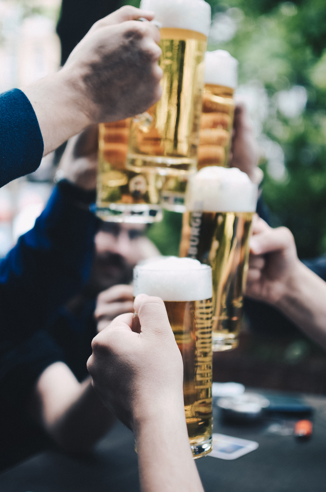

My Favorite Beers
A list of delicious beer to slake your thirst!
Favorite sour beers
- de Garde Broken Truck
- Cantillon Classic
- Jester King Nocturn Chrysallis
- Side Project Saison de Ble
- drie fonteinen Oude Kriek
Favorite IPAs
- Breakside IPA
- Block 15 Sticky Hands
- Melvin IPA
- Boneyard Notorious
- Silver Moon IPA 97
Favorite Stouts
- Fremont Coffee Cinnamon Bourbon Abominable (Cinnamon B-Bomb)
- No Rules
- Cycle Pallete
- Three Magnets Howard's Blend
- Side Project Derivation
